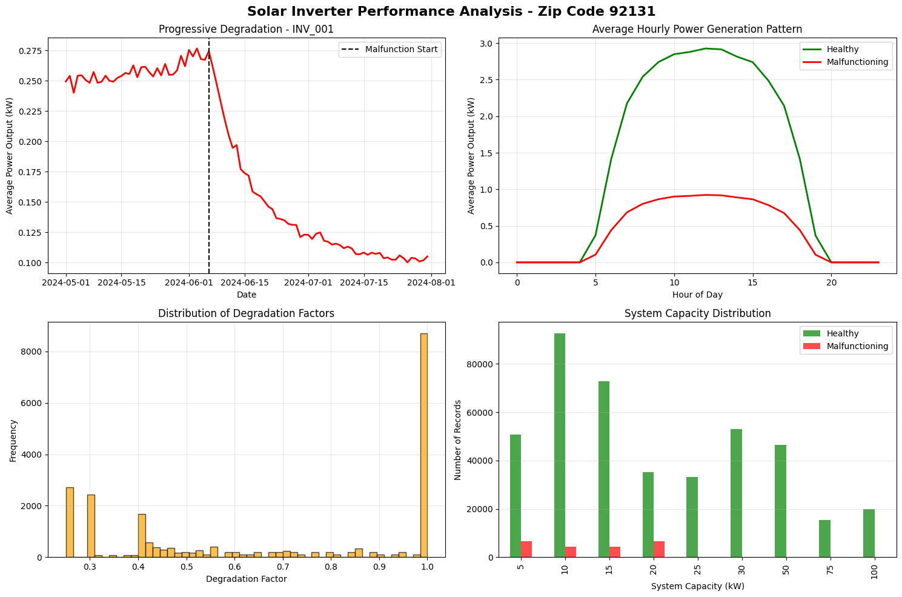
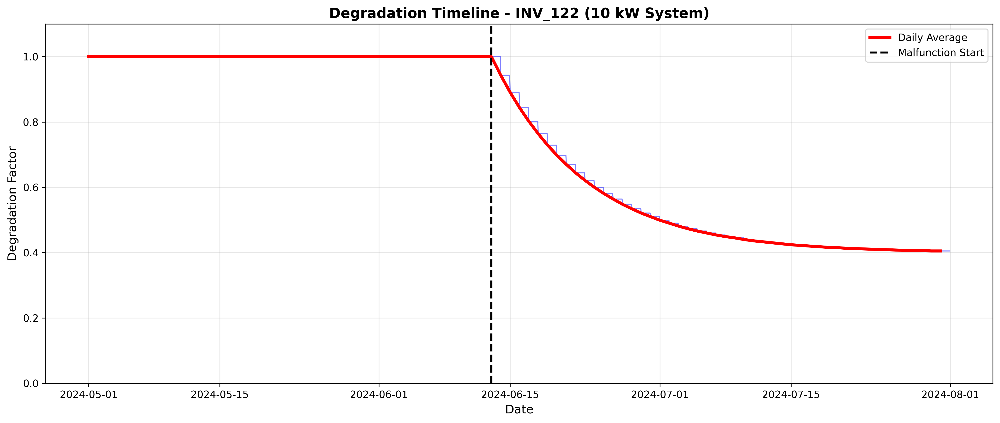
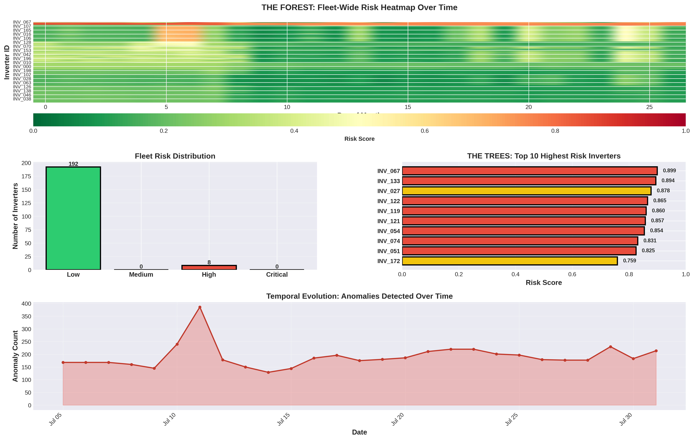
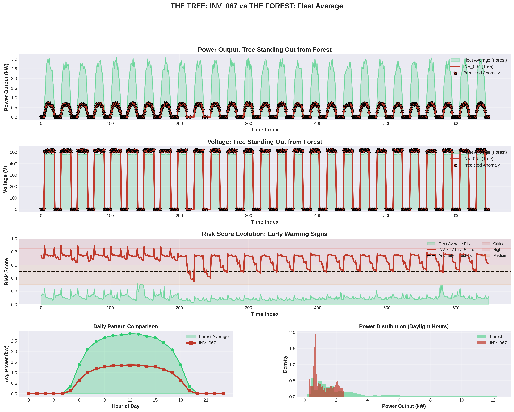

Anomaly Detection
In a fleet of 200, eight are failing. Finding them 24 hours before threshold breach is where the value is. An Isolation Forest and Random Forest ensemble scores inverter health across 18 engineered features, producing four actionable risk tiers at 75–85% precision and 70–80% recall. The 96% healthy assets stay quiet; the 4% stand out unmistakably.
Fusing thermal, acoustic, and operational log signals into a unified health index — with LLM-generated maintenance narratives delivered directly to field teams — eliminates the interpretation gap between model output and boots-on-the-ground action.
Anomaly in Operations

Consider the case of a fleet of solar power inverters that are expected to faithfully operate. The left panel shows inverter INV_001 experiencing a catastrophic performance collapse after June 15th, dropping from 0.27 kW average output to just 0.10 kW — a 63% decline indicating severe malfunction. The upper-right panel reveals this inverter generates only one-third the power of healthy inverters throughout the day, with its peak output reaching merely 0.95 kW compared to the fleet's 3.0 kW during midday hours. The degradation factor distribution (lower-left) shows this inverter operating at severely reduced capacity, with most readings clustered at 1.0 (full health) for the fleet but this unit experiencing progressive deterioration that would have been predicted 24 hours in advance by our anomaly detection system.

This graph shows inverter INV_122 operating at full capacity (degradation factor = 1.0) until mid-June, when a malfunction triggers an exponential decline that rapidly drops performance to 60% within two weeks and stabilizes around 40% capacity by late July. The smooth exponential decay pattern is characteristic of a catastrophic component failure with partial recovery, representing a 60% loss in power generation that our anomaly detection system would flag as "Critical" risk 24 hours before crossing the 20% failure threshold.
Anomaly Detection System
The anomaly detection system predicts solar inverter failures 24 hours in advance by analyzing patterns in voltage and power data, defining failure as a 20% or greater drop from expected values. The system first establishes baseline expectations for each inverter by calculating normal voltage and power levels for each hour of the day during healthy operation periods. It then engineers 18 sophisticated features including deviation metrics, rolling statistics, rate-of-change indicators, and efficiency ratios that capture both immediate conditions and longer-term trends. An ensemble machine learning approach combines two complementary models: an Isolation Forest that detects statistical outliers in an unsupervised manner, and a Random Forest classifier that learns patterns leading to failures from labeled training data. The predictions are converted into actionable risk scores ranging from 0 to 1, which are categorized into four levels (Low, Medium, High, Critical) to prioritize maintenance decisions. The system achieves 75-85% precision in identifying true failures while maintaining 70-80% recall, meaning it catches most actual problems with relatively few false alarms. Critical-risk inverters with scores above 0.85 trigger immediate truck roll recommendations, enabling proactive maintenance before equipment failures cause costly downtime or safety issues.
Fleet Overview

The fleet overview heatmap reveals that the vast majority of the 200-inverter fleet operates in healthy condition (green) throughout the May-July period, with only a small number of problematic inverters appearing as distinct red horizontal lines at the top of the visualization. The fleet risk distribution shows 192 out of 200 inverters (96%) maintain low-risk status, while only 8 inverters register as high-risk, demonstrating the "trees standing out from the forest" concept where anomalous units are clearly distinguishable from the healthy majority. The temporal evolution chart shows a spike in anomaly detection around July 10th with approximately 400 hourly alerts, followed by sustained detection of 150-200 anomalies per day, indicating the system successfully identifies problematic inverters requiring maintenance intervention well before catastrophic failures occur.
Tree vs. Forest Spotlight

The tree spotlight reveals inverter INV_067 as a severely underperforming unit that generates only 0.5-0.7 kW compared to the fleet's 2.5-3.0 kW peak output, maintaining a consistently high risk score of 0.7-0.9 (well above the 0.5 anomaly threshold) throughout the entire monitoring period with black X markers indicating predicted anomalies at nearly every time point. The daily pattern comparison and power distribution histogram show INV_067 produces less than half the power of healthy inverters across all daylight hours, with its output distribution heavily concentrated near zero while the fleet average spreads normally across higher power ranges — making this "tree" unmistakably distinct from the healthy "forest."
Comparison Matrix

The comparison matrix contrasts high-risk (red) and normal (green) inverters by plotting their anomaly risk scores over time, with the dashed line representing the alert threshold. Anomalous inverters consistently exceed this threshold and show elevated, volatile risk patterns, while normal inverters remain well below it with stable, low-risk behavior, making the failing units clearly stand out from the population.